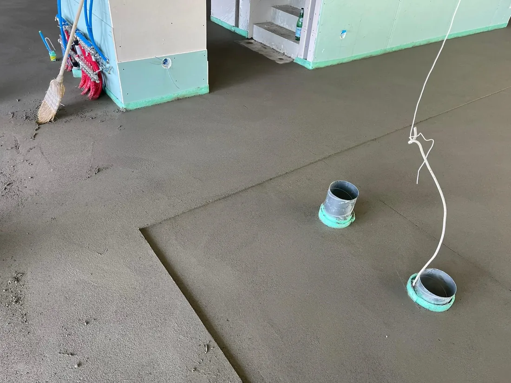
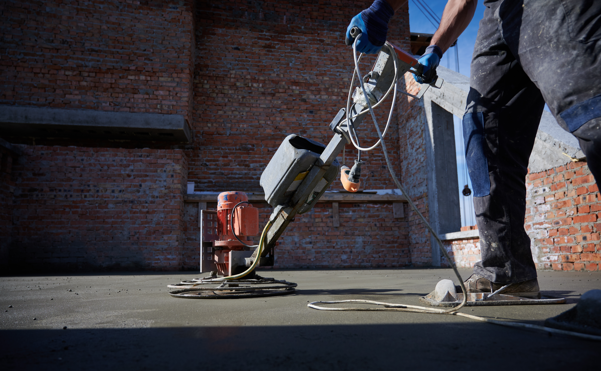
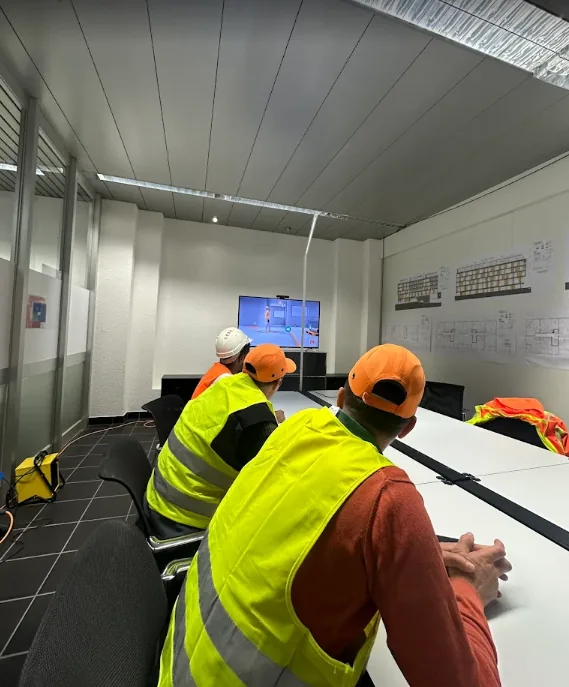
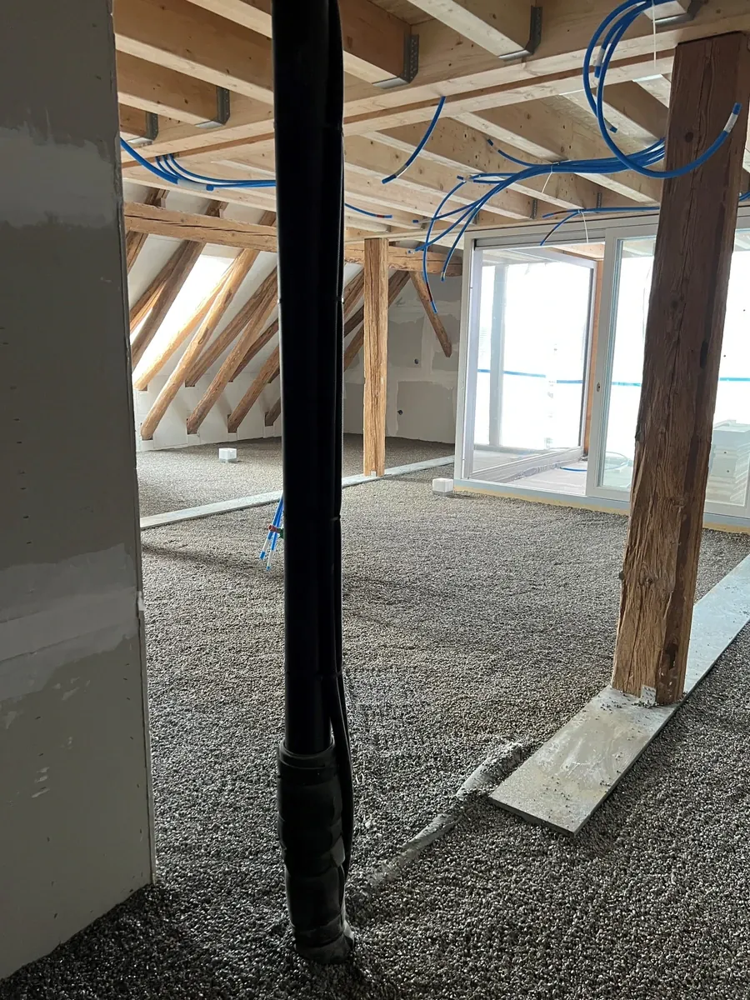
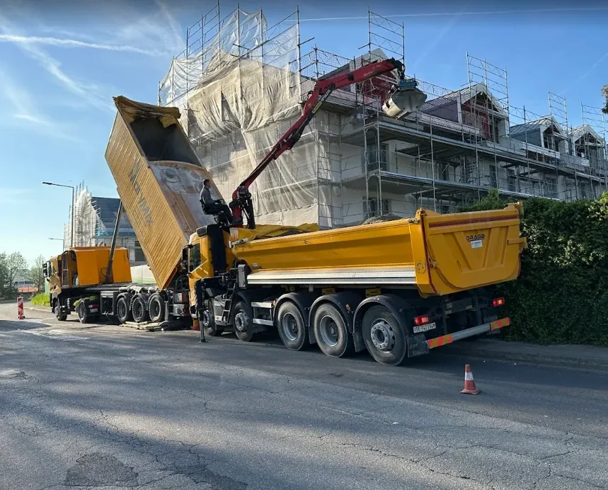
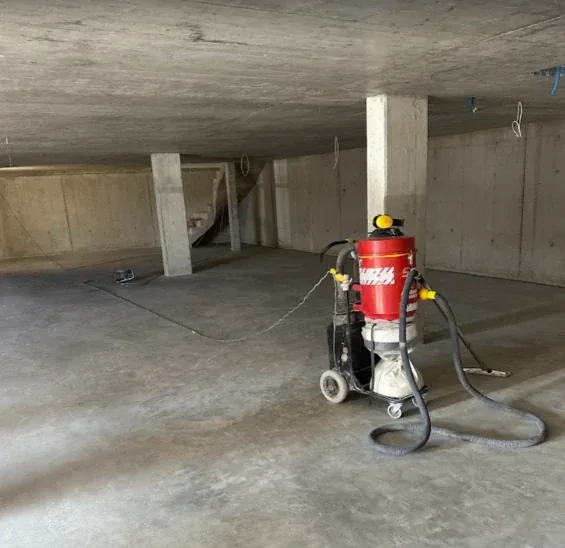
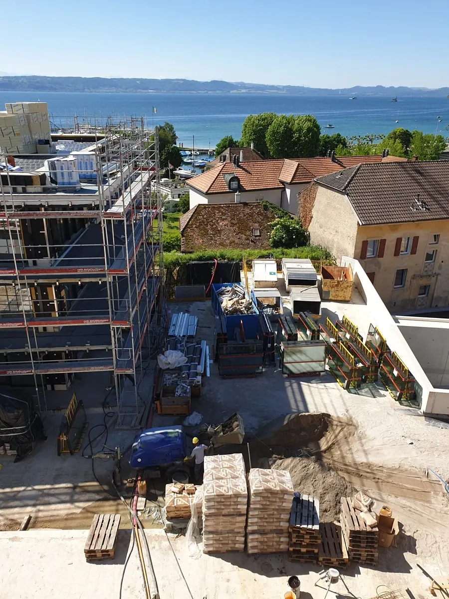
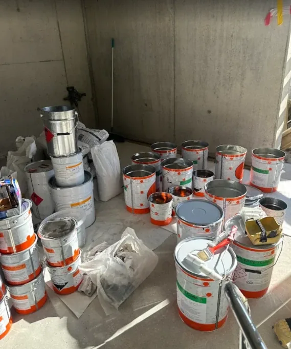

01
Chapes
Chapes ciment et solutions traditionnelles pour tous types de sols.
- Chapes ciment
- Mise à niveau
- Finition soignée

Chapes, isolation et solutions de sol pour vos projets en Suisse romande.
Reprise de la logistique, puis passage en SA.
Intervention sur de nombreux projets.
Des solutions adaptées à chaque chantier.

Notre histoire débute en 2005, avec le rachat de la logistique de Franco Gaiardo Chapes, sans acquisition du nom de l'entreprise. Cette reprise nous a permis de poursuivre notre activité avec les moyens et l'expérience nécessaires au métier.
En 2007, l'entreprise franchit une nouvelle étape et devient GUTA Chapes SA. Depuis, nous développons notre savoir-faire chantier après chantier, dans le domaine des chapes et de l'isolation en Suisse romande.
Chaque projet de construction ou de rénovation a ses propres exigences. Nous mettons notre savoir-faire au service de vos besoins, avec un travail soigné et professionnel du début à la fin du chantier.
Nous proposons une gamme complète de prestations dans le domaine des chapes et de l'isolation, adaptées aux besoins de chaque chantier.

Chapes ciment et solutions traditionnelles pour tous types de sols.

Isolation thermique et acoustique pour améliorer le confort de vos sols.

Solutions fluides et autonivelantes adaptées aux exigences du chantier.

Préparation, ragréage et rénovation des supports avant pose.

Chaque projet présente ses propres contraintes : accès, délais, matériaux ou configuration des lieux. Nous choisissons la solution technique la plus adaptée aux exigences réelles de votre chantier.

Vous nous présentez votre projet et vos besoins.
Les besoins et contraintes du chantier sont étudiés.
Les travaux sont réalisés selon les exigences définies.
Le chantier est finalisé et contrôlé.
Parlez-nous de votre projet et obtenez les informations nécessaires pour votre chantier.
N'hésitez pas à nous contacter pour toute question ou demande de devis.
GUTA Chapes SA
Route de Fribourg 140
1726 Farvagny-le-Petit
Suisse
| Lundi | 08:00 – 17:30 |
| Mardi | 08:00 – 17:30 |
| Mercredi | 08:00 – 17:30 |
| Jeudi | 08:00 – 17:30 |
| Vendredi | 08:00 – 17:30 |
| Samedi | Fermé |
| Dimanche | Fermé |